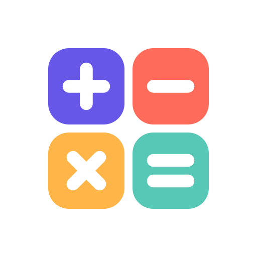

생활 계산기 - 계산과 기록개인정보처리방침
Planetspoon은 생활 계산기를 이용할 때 어떤 정보가 처리되는지,
그리고 그 정보를 어떻게 관리할 수 있는지 안내합니다.
먼저, 핵심만 알려드릴게요.
- 회원가입 없이 사용하며, 계산 기록은 이용자의 기기에 저장됩니다.
- 계산식·입력값·메모를 운영자의 서버로 전송하지 않습니다.
- 광고, 이용 행태 분석 및 추적용 SDK를 사용하지 않습니다.
- 직접 선택한 백업·내보내기·공유와 이메일 문의는 아래에서 별도로 설명합니다.
01처리하는 정보와 이용 목적
생활 계산기는 별도 계정을 만들거나 이름, 이메일, 전화번호를 입력하지 않고 사용할 수 있습니다. 다음 정보는 계산 기능, 기록 조회와 검색, 문서 작성 및 이용 환경 설정을 위해 기기 내부에서 처리됩니다.
- 계산 및 기록
- 입력한 수식·값, 계산 결과, 기록 제목·메모·태그, 즐겨찾기, 생성·수정 시각
- 계산 문서
- 문서 제목, 항목과 수식, 계산 결과 및 문서에 입력한 내용
- 앱 설정
- 테마, 숫자 표시, 진동, 기록 자동 저장·보관 기간, 도구 즐겨찾기 및 온보딩 완료 여부
이 정보는 운영자가 수집하거나 열람하는 서버 데이터가 아닙니다. 생활 계산기는 자체 클라우드 동기화, 광고 식별자 수집, 사용자 추적 또는 분석 서비스로의 자동 전송을 제공하지 않습니다.
02백업, 내보내기와 외부 공유
이용자가 기능을 실행하면 계산 기록·문서·태그·즐겨찾기가 담긴 JSON 백업 파일이나 계산 문서의 CSV 파일을 만들 수 있습니다. 백업 파일은 이용자가 지정한 위치에 저장되며, 선택한 파일을 읽어 복원합니다. 앱 설정은 백업 복원으로 교체하지 않습니다.
복사한 수식과 결과는 기기의 클립보드로 전달됩니다. 공유 기능은 이용자가 선택한 앱에 내용을 전달합니다. 클라우드 드라이브나 메신저를 선택하면 해당 서비스가 정보를 처리할 수 있으며, 그 서비스의 개인정보처리방침과 보관 정책이 적용됩니다.
운영자는 앱에 저장된 계산 정보를 직접 제3자에게 제공하거나 판매하지 않으며, 해당 정보를 처리하도록 외부 사업자에게 위탁하지 않습니다. 기기 운영체제의 백업·복원 기능이 처리하는 정보는 이용자의 기기 설정과 해당 제공자의 정책에 따릅니다.
03기기 접근 권한
생활 계산기는 연락처, 위치, 카메라, 마이크 또는 사진 보관함에 접근하지 않습니다. 파일 백업·복원·내보내기에는 운영체제의 파일 선택 및 저장 화면을 사용하며, 이용자가 선택한 파일이나 저장 위치에 접근합니다.
복사 기능을 실행하면 결과를 클립보드에 쓰고, 진동을 켠 경우 버튼 입력에 대한 진동 피드백을 제공합니다. 파일 작업을 취소해도 기본 계산 기능은 계속 사용할 수 있습니다.
04정보의 보관과 삭제
- 계산 기록: 기본 설정에서는 기간 제한 없이 기기에 보관합니다. 이용자가 직접 삭제하거나, 설정에서 30일·90일·1년 보관 기간을 선택할 수 있습니다. 기간을 설정하면 앱 시작 시 마지막 수정일이 기준보다 오래된 기록을 정리합니다.
- 계산 문서: 기록 보관 기간에 따른 자동 정리와 별도로 관리됩니다. 필요하지 않은 문서는 앱에서 직접 삭제할 수 있습니다.
- 기기 내 앱 데이터: 운영체제에서 앱과 해당 데이터를 삭제하면 제거할 수 있습니다. 데이터를 유지하는 앱 정리·오프로드 기능은 데이터 삭제와 다릅니다.
- 외부 사본: 내보낸 파일, 공유받은 앱의 사본 및 운영체제 백업은 앱에서 원본을 삭제해도 함께 삭제되지 않습니다. 저장한 위치와 해당 서비스에서 별도로 삭제해야 합니다.
운영자는 기기 안의 기록에 원격으로 접근하거나 대신 삭제할 수 없습니다. 앱의 삭제 기능을 이용하거나 기기 내 앱 데이터를 제거해 주세요.
05정보를 보호하는 방법
앱 데이터는 운영체제가 관리하는 앱 전용 저장 공간에 보관합니다. 기기 잠금과 운영체제 보안 업데이트로 기기 접근을 보호해 주세요.
JSON 백업과 CSV 내보내기 파일에는 별도의 암호를 설정하지 않습니다. 파일을 읽을 수 있는 사람은 그 안의 내용도 볼 수 있으므로, 보관 위치와 공유 대상을 신중하게 선택해 주세요.
06이 웹사이트를 이용할 때
이 개인정보처리방침 웹사이트에는 광고, 방문자 분석 스크립트, 추적 쿠키 및 외부 폰트를 사용하지 않습니다.
웹사이트는 GitHub Pages에서 제공됩니다. 페이지에 접속하면 GitHub가 서비스 제공과 보안을 위해 IP 주소 등 접속 정보를 처리할 수 있습니다. 자세한 내용은 GitHub 개인정보처리방침에서 확인할 수 있습니다. 이러한 웹 접속 정보는 앱에 저장된 계산 기록과 별개입니다.
07문의와 이용자의 권리 행사
개인정보 관련 질문이나 열람·정정·삭제·처리 정지 요청은 아래 이메일로 보내주세요. 기기 내 정보는 앱에서 직접 확인·수정·삭제할 수 있으며, 운영자가 보유한 문의 정보에 대해서는 이메일로 요청할 수 있습니다.
운영자 및 개인정보 문의 담당: Planetspoon
planetspoon.support@gmail.com이메일 문의 시 발신 이메일 주소, 문의 내용 및 직접 첨부한 자료를 답변과 문제 해결 목적으로 처리합니다. 필요한 내용만 보내주시고, 계산 기록에 포함된 민감한 정보는 제외해 주세요. 문의 정보는 처리 목적이 달성되면 지체 없이 삭제하며, 관계 법령에 따라 보관할 의무가 있는 경우 해당 기간 동안 보관합니다.
문의 수신에는 Google의 Gmail을 사용하므로 이메일은 Google의 서비스에서 처리·보관됩니다. 서비스의 데이터 처리에 관한 내용은 Google 개인정보처리방침을 확인해 주세요.
08개인정보처리방침 변경
앱 기능이나 정보 처리 방식이 변경되면 이 페이지에 변경된 방침과 시행일을 게시합니다. 새로운 개인정보 수집이나 동의가 필요한 변경이 있는 경우, 적용 전에 필요한 안내와 동의 절차를 진행합니다.
이 방침은 부터 시행합니다.